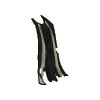
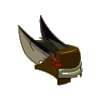
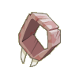
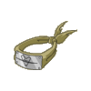
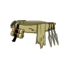
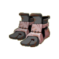
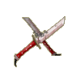

Menu barbok'you

| Niveau 105 | Cape du Rat Noir | ||
|---|---|---|---|
| Recettes : | Caractéristiques : | Conditions : | |
|  | 40 Poils rat d'egoutant 35 Poils de kanigrou 30 Crocs de rat 15 Oreilles de kanigrou 10 Colonnes vertébrales 3 Etoffes du rat noir 1 Poil de chaman d'egoutant |
+31 à 40 agilité +11 à 20 sagesse +4 à 5 dommages +41 à 70 vitalité +6 à 8 dommages pièges +11 à 20% dommages pièges 4 à 6% résistance neutre |
aucune |
| Remarques : | |||
| Niveau 102 | Masque du Rat Noir | ||
|---|---|---|---|
| Recettes : | Caractéristiques : | Conditions : | |
|  | 30 Poils de rat d'egoutant 20 Mains de boo 20 Poils de souris 20 Yeux de kolérat 10 Sèves d'abraknyde 4 Etoffes du rat noir 2 Poils de chaman d'egoutant |
+31 à 40 agilité +16 à 25 sagesse +51 à 80 vitalité +3 à 4 CC +6 à 10 dom. piège +6 à 10% dommages +16 à 25% dom. piège +4 à 6 résistance air +4 à 6 de résistance terre |
aucune |
| Remarques : | |||
| Niveau 98 | Anneau du Rat Noir | ||
|---|---|---|---|
| Recettes : | Caractéristiques : | Conditions : | |
|  | 30 Dent de dragodinde 3 Cubitus du rat noir 2 Pyrute 1 Anneau du kitsou 1 Saphir 1 Anneau du koalak 1 Rubis |
+21 à 30 agilité +11 à 20 sagesse +31 à 50 vitalité +4 à 5 dommages +4 à 5% dommages +5 à 8 dom aux pièges +101 à 150 initiative +4 à 5 prospection |
|
| Remarques : | |||
| Niveau 103 | Collier du Rat Noir | ||
|---|---|---|---|
| Recettes : | Caractéristiques : | Conditions : | |
|  | 50 Croc de rats 20 Oeil d'ouginak 10 Collier cassé d'ouginak 10 Ambre de bambouto 2 Etoffe du rat noir 1 La broche céleste 1 Rubis |
+1 PA +41 à 70 vitalité +26 à 40 agilité +16 à 25 sagesse +6 à 10 dom. pieges >+16 à 25% dom. pieges +4 à 6 résistance feu |
aucune |
| Remarques : | |||
| Niveau 101 | Ceinture du Rat Noir | ||
|---|---|---|---|
| Recettes : | Caractéristiques : | Conditions : | |
|  | 50 Cuirs de porkass 30 Peaux de kanigrou 15 Poils de rat d'égoutant 2 Peaux du rat noir 2 Poils du chaman d'égoutant 1 Ceinture brakmarienne 1 Etoffe du rat noir |
+31 à 45 agilité +41 à 60 vitalité +11 à 15 sagesse +3 à 4 CC +1 portée +6 à 10 dommages aux pièges +16 à 25% dommages aux pièges +101 à 200 initiative 4 à 6% résistance neutre |
aucune |
| Remarques : | |||
| Niveau 101 | Bottes du Rat Noir | ||
|---|---|---|---|
| Recettes : | Caractéristiques : | Conditions : | |
|  | 35 Peaux de kanigrous 5 Cuirs violets de bwork 2 Bottes trouées de bwork 2 Peaux de rat noir 2 Peaux de rat d'égoutant 2 Souliers de porkass 1 Paire de bottes de ragalde |
+1 PM +41 à 60 vitalité +21 à 35 agilité +21 à 30 sagesse +16 à 25% dommages pieges +6 à 10 dommages pieges 3 à 4% résistance feu |
aucune |
| Remarques : | |||
| Niveau 108 | Dague du Rat Noir | |||
|---|---|---|---|---|
| Recettes : | Effets : | Caractéristiques : | Conditions : | |
|  | 45 Dents de wabbit 45 Crocs de rat 15 Canines du mulou 6 Magnésite 5 Ebonite 4 Cubitus de rat noir 4 Rubis |
Dom : 17 à 20 (air) Vole : 21 à 30 d'or +41 à 60 vitalité +26 à 40 agilité +2 à 3 CC +3 à 5 dommages +6 à 10 dommages pieges +21 à 30% dommages pieges +100 initiative |
PA : 3 Portée : 1 à 1 Bonus CC : +10 Critique : 1/30 Echec : 1/50 |
|
| Remarques : | ||||
| 1 Items | Aucun bonus |
|---|---|
| 2 Items | +10 Vitalité / +5 Agilité / +1 Dom pièges |
| 3 Items | +20 Vitalité / +10 Agilité / +2 Dom pièges / +5% Dom pièges |
| 4 Items | +30 Vitalité / +20 Agilité / +4 Dom pièges / +10% Dom pièges |
| 5 Items | |
| 6 Items | |
| 7 Items | +50 Vitalité / +40 Agilité / +10 Dom pièges / +30% Dom pièges / +5 CC / +1 PO |
Dofus est un MMORPG édité par Ankama." Barbok " est un site non-officiel sans aucun lien avec Ankama.
Toutes les illustrations sont la propriété d'Ankama Studio et de Dofus. Le contenu de ce site a été rédigé initialement par Immortal, il ne s'agit que d'une remise en ligne effectuée par Eternal Games.